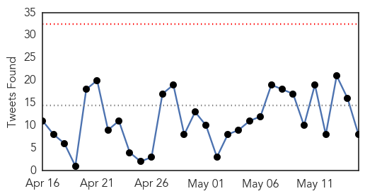
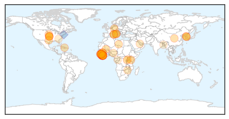
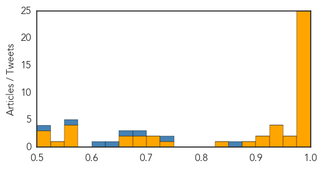
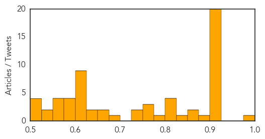

Ebola
30-Day Web Trend
0 alerts, 0 warnings

30-Day Twitter Trend
0 alerts, 0 warnings

Article Locations
Article Confidences
Top Articles:
- 1.000
- Ugandan at forefront of Ebola war in Sierra Leone
- 1.000
- Guinea sees spurt of Ebola cases; Sierra Leone has 1
- 1.000
- Controlling the Last Known Cluster of Ebola Virus Disease — Liberia, January–February 2015 - Liberia
- 1.000
- Lessons from Nigeria on Ebola
- 0.999
- MSF Reflects On Ebola Outbreak
- 0.999
- New genomics laboratory in Liberia enables scientists to monitor genetic changes in Ebola virus
- 0.999
- First confirmed Ebola case in Italy
- 0.998
- 13 quarantined in Italy after Ebola virus infects nurse
- 0.998
- Experts call for major reforms at WHO to handle next outbreak
- 0.998
- 13 quarantined in Italy after Ebola virus infects nurse
- 0.998
- The most from the coast
- 0.998
- 13 quarantined in Italy after Ebola virus infects nurse
- 0.997
- Doctors Look to Prevent Another Ebola Epidemic
- 0.997
- After Ebola, Can Africa Take Lead in Responding to Health Emergencies? - Sierra Leone
- 0.996
- Guinea Ebola cases climb due to transmissions at funerals
- 0.992
- News Analysis: Second Italian infected by Ebola virus illustrates rich-poor divide
- 0.991
- Disputes emerge over Ebola drug trials
- 0.991
- Ebola crisis sets back African health targets
- 0.988
- Ebola lives on in eyeball of 'recovered' Ebola victim
- 0.987
- Learning fromthe Ebola crisis
- 0.986
- New UN Ebola mission boss urges Sierra Leone to end Ebola before the rainy season
- 0.986
- Disputes emerge over African Ebola drug trials
- 0.986
- How a small backpack for fast genomic sequencing is helping combat Ebola
- 0.982
- New Liberia lab monitors genetic changes in Ebola virus
- 0.982
- New Liberia lab monitors genetic changes in Ebola virus
- 0.973
- A Desperate Attempt to Survive?
- 0.956
- Emergency nurse with Ebola in stable
- 0.940
- After 6 months of Public Health training…China CDC bids farewell « Awoko Newspaper
- 0.938
- Park confers medals on 24 S. Koreans over Ebola relief
- 0.929
- Have Stethoscope, Will Travel
- 0.928
- Park confers medals on 24 S. Koreans over Ebola relief
- 0.917
- UN and Africa: focus on Libya, West Africa and the situation in South Sudan
- 0.913
- Africa Ebola Coordination and Preparedness: Emergency Appeal n° MDR60002, 6 Months Operation Update - Sierra Leone
- 0.897
- Churches and Mosques Educate on Ebola
- 0.848
- Nurses with tablets and bikers with smartphones join Ebola fight
- 0.729
- Air France to start June 30 « Awoko Newspaper
- 0.719
- Ireland to open their campaign on July 10th at Stormont against Namibia
- 0.716
- MSF hosts first-ever scientific day in Harare
- 0.698
- Distribution of $1.6m free health drugs commences « Awoko Newspaper
- 0.693
- The intricacies involved in rebuilding clinics in Sierra Leone
- 0.667
- LIBERIA: Bassa Women Development Association Signs US$15,000.00 Contract With American-Jewish Service
- 0.656
- The End of Ebola for Liberia - Jones Nhinson Williams Congratulates Ellen
- 0.567
- Health Care Heroes Awards honor health leaders, physicians
- 0.564
- As Sierra Leone Observed International Nurses Day, Chief Nursing Officer reveals process to recruit Volunteer Nurses into the Civil Service
- 0.555
- KBS World Radio
- 0.551
- Tony Blair Commends Sierra Leone in the fight against Ebola, Expresses support to the Country’s Post Ebola Recovery Programme
- 0.531
- Liberians celebrated the end of the Ebola epidemic after the World Health Organization made it official on May 9
- 0.522
- Reversing Africa’s Medical Brain Drain
- 0.512
- As Sierra Leone Observed International Nurses Day
- 0.511
- Autopsies Could Prevent Epidemics, Save Countless Lives
Showing top 50 articles...
Top Tweets:
- 0.945
- Nurse Reflects on Tour Treating Ebola Patients in Sierra Leone - New York Times http://t.co/Xs8X0jVSMd ebola EVD
- 0.932
- Doctors Look to Prevent Another Ebola Epidemic - Voice of America http://t.co/Orb98EPC4i ebola EVD
- 0.907
- New study eases fears of airborne Ebola - Medical Xpress http://t.co/i6qGNSY4Lm ebola EVD
- 0.889
- Traveler from Liberia being monitored for possible Ebola - Las Vegas Review-Journal http://t.co/Y2eSakkbz1 ebola EVD
- 0.870
- Nurses with tablets and bikers with smartphones join Ebola fight - Reuters http://t.co/FLnuQ10pxx ebola EVD
- 0.869
- VCU Medical Center vies to be Ebola regional treatment hospital - http://t.co/XtBrHGJnwV http://t.co/CGJeNqQucn ebola EVD
- 0.843
- What Should Liberia Do With Its Empty Ebola Treatment Units? - NPR http://t.co/ZPFq2aylU1 ebola EVD
- 0.813
- Le concours de chant | Africa Stop Ebola http://t.co/ltgF4MoD0M
- 0.781
- RT: Gordon, the Ebola ambulance nurse I met last year (http://t.co/wsJZ2zjeeA) just married in Monrovia after ebola end http:/…
- 0.659
- RT: A hygienist tests positive for Ebola @ Emergency hosp @ Goderich, SierraLeone. He worked with Italian nurse who tested p…
- 0.588
- It's Like The Story Of Job: Ebola Survivors Who Continue To Suffer - NPR http://t.co/BwgGuQIYbZ ebola EVD
- 0.552
- From today's Situation Report -> SierraLeone reports its first Ebola case in 8 days https://t.co/KheDn1EhFg EbolaResponse
- 0.544
- As Ebola exits Liberia, measles begin to make a forceful comeback http://t.co/wmxM2HmEun
Unknown
30-Day Web Trend
0 alerts, 0 warnings

30-Day Twitter Trend
1 alerts, 0 warnings

Article Locations

Article Confidences
Top Articles:
- 0.976
- Lyme disease: Doctors advise against long-term antibiotic treatment Republican American
- 0.924
- World Health Organization, Nepal ramps up disease surveillance after earthquakes
- 0.921
- In India, a concerted push to eliminate kala-azar
- 0.918
- Food Outbreak Scan for May 14, 2015
- 0.917
- Nepal Ramps Up Disease Surveillance After Earthquakes
- 0.917
- Chicago Tribune
- 0.917
- Chicago Tribune
- 0.917
- Chicago Tribune
- 0.917
- Chicago Tribune
- 0.917
- Chicago Tribune
- 0.917
- Chicago Tribune
- 0.917
- Chicago Tribune
- 0.917
- Chicago Tribune
- 0.917
- Chicago Tribune
- 0.917
- Chicago Tribune
- 0.917
- Chicago Tribune
- 0.917
- Chicago Tribune
- 0.917
- Chicago Tribune
- 0.914
- Upsurge in bird flu human cases in Egypt: WHO
- 0.910
- The world windows to Thailand
- 0.902
- Stomach Bug Traced to Swimming in Contaminated Lake Water – WebMD
- 0.898
- Portimão Hospital nurses test positive for latent tuberculosis
- 0.867
- Nepal ramps up disease surveillance after earthquakes - Nepal
- 0.856
- UTMB Creates Vaccine Against Chagas Disease BioNews Texas
- 0.844
- Victims twice over: MSF continues to assist people affected by the two earthquakes in Nepal
- 0.821
- WHO delivers additional medicines and medical supplies into Yemen - Yemen
- 0.817
- More than a dozen shigellosis cases confirmed in Champaign Count
- 0.808
- State issues Detroit Lake algae health alert
- 0.801
- Ohio: Poultry from bird flu states banned from state fair
- 0.789
- Efforts to control river blindness in Africa are a remarkable success story building upon the strength of diverse and public-private-partnerships
- 0.773
- No New EHV-1 Cases Reported in Oregon This Week
- 0.768
- CDC: Efforts to stem food-borne illnesses paid off in 2014, but risk remains
- 0.766
- Early detection of kidney disease can halt progression
- 0.739
- NunatsiaqOnline 2015-05-15: NEWS: Prevent the flu by washing your hands: GN
- 0.730
- Study Finds UK Must Improve Mesothelioma Care
- 0.690
- San Francisco: More than 150 cruise ship passengers and crewmembers fall ill from Norovirus
- 0.668
- NEPAL Hospital emergency: lack of beds and medicine for earthquake victims in Nepal
- 0.652
- Early detection of kidney diseases
- 0.637
- Senegal searches for its missing after migrant boat wrecks
- 0.637
- Luxembourg’s PM among first to benefit from new gay marriage law
- 0.616
- Cancer Haves And Have-Nots: Care And Treatment In 2 Different Worlds
- 0.616
- Cancer Haves And Have-Nots: Care And Treatment In 2 Different Worlds
- 0.612
- Westport pubs, restaurants urged to impose boil water notice
- 0.609
- US sentences Saudi man to life in prison over 1998 embassy bombings
- 0.609
- Burden of Autosomal Dominant Polycystic Kidney Disease
- 0.604
- South Sudan army committed ‘grave’ abuses, say neighbouring states
- 0.604
- Video: Thai officials hunt down Rohingya trafficking camps
- 0.604
- Burundi’s Nkurunziza heads to capital after failed coup
- 0.602
- US and Cuba table next round of talks on opening embassies
- 0.596
- Nkurunziza says ‘peace’ has returned to Burundi after failed coup
Showing top 50 articles...
Top Tweets:
- 0.565
- RT: Reduzcamos el consumo de electrónicos, de ropa, de plástico, de vidrio, de todo... hasta de la comida.